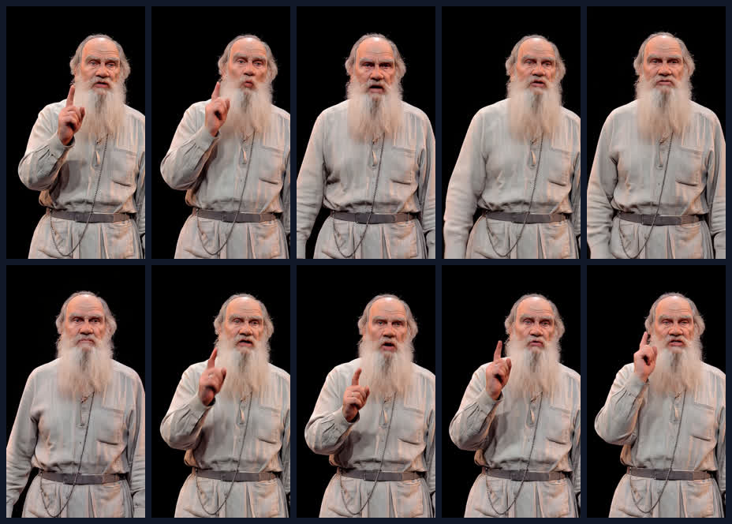
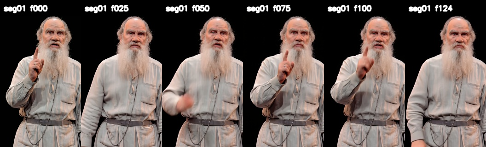
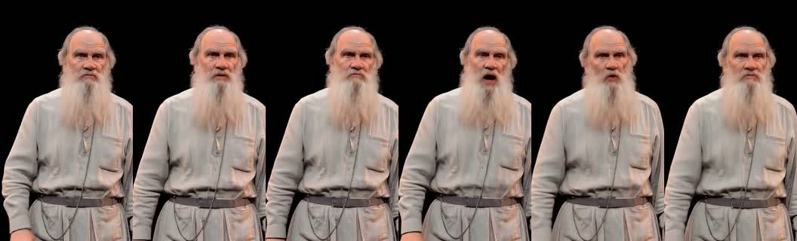
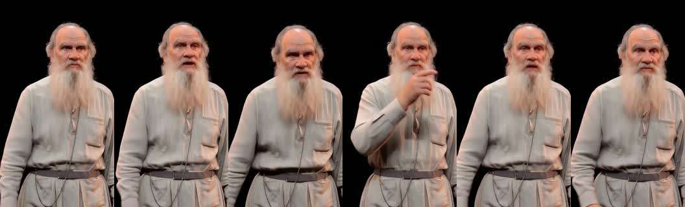
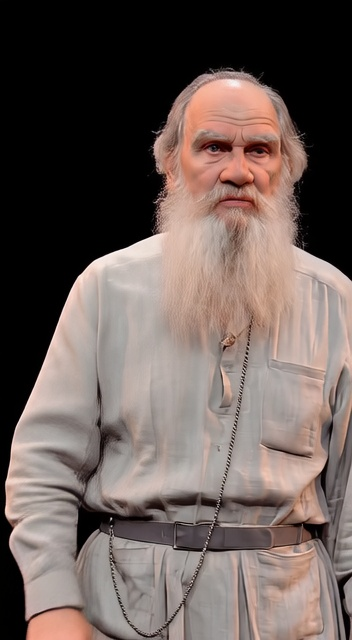

<!doctype html>
<html lang="ru">
<head>
<meta charset="utf-8">
<meta name="viewport" content="width=device-width, initial-scale=1">
<title>LEV lipsync statistics</title>
<style>
:root{--bg:#0c1018;--panel:#151b27;--panel2:#101722;--text:#e8edf7;--muted:#9aa8bd;--line:#2b3748;--ok:#5ee0a0;--warn:#ffd166;--bad:#ff6b6b;--blue:#76b7ff}
*{box-sizing:border-box} body{margin:0;background:radial-gradient(900px 520px at 20% -10%,#21314c 0,#0c1018 58%);color:var(--text);font-family:Segoe UI,Arial,sans-serif} .wrap{max-width:1320px;margin:0 auto;padding:24px} h1{margin:0 0 6px;font-size:28px} .sub{color:var(--muted);margin-bottom:18px} .grid{display:grid;grid-template-columns:1.1fr .9fr;gap:16px} .card{background:linear-gradient(180deg,var(--panel),var(--panel2));border:1px solid var(--line);border-radius:18px;padding:16px;box-shadow:0 18px 50px #0006} .full{grid-column:1/-1} table{width:100%;border-collapse:collapse;font-size:14px} th,td{border-bottom:1px solid var(--line);padding:10px;text-align:left;vertical-align:top} th{color:#c7d7ee;font-weight:650} .badge{display:inline-block;border:1px solid #38506c;border-radius:999px;padding:4px 9px;margin:2px 4px 2px 0;font-size:12px;color:#dbe9ff;background:#162336} .ok{color:var(--ok)} .warn{color:var(--warn)} .bad{color:var(--bad)} code,.path{font-family:Consolas,monospace;color:#9fc8ff;word-break:break-all} video{width:100%;max-height:720px;background:#000;border-radius:14px;border:1px solid #243248} img{max-width:100%;border-radius:14px;border:1px solid #243248;background:#080b11} pre{white-space:pre-wrap;max-height:360px;overflow:auto;background:#090d14;border:1px solid #263244;border-radius:14px;padding:12px;color:#cbd6e8} .note{color:#cdd8e8;line-height:1.5} .small{font-size:12px;color:var(--muted)} .actions a{display:inline-block;margin:4px 6px 4px 0;padding:8px 10px;border-radius:10px;background:#1b2a3d;color:#d9ecff;text-decoration:none;border:1px solid #334760}

.storyline{display:grid;grid-template-columns:repeat(3,minmax(0,1fr));gap:14px;margin-top:12px}.shotcard{background:#0f1622;border:1px solid var(--line);border-radius:16px;padding:12px;min-width:0}.shotcard h3{margin:0 0 6px;font-size:18px}.shotmeta{display:flex;gap:6px;flex-wrap:wrap;margin:8px 0}.shotimg{width:100%;aspect-ratio:3.3/1;object-fit:cover;background:#05070a;border-radius:12px;border:1px solid #243248}.shotnotes{font-size:13px;line-height:1.42;color:#cbd6e8}.compare-row{display:grid;grid-template-columns:1fr 1fr;gap:12px;margin-top:12px}.mini-frame{max-height:260px;object-fit:contain;background:#05070a}@media(max-width:980px){.storyline{grid-template-columns:1fr}.compare-row{grid-template-columns:1fr}}

</style>
</head>
<body><div class="wrap">
<h1>LEV lipsync statistics</h1>
<div class="sub">Обновлено: 2026-05-21 07:09:50. Статус по Льву Николаевичу: seg01, seg02 и seg03 waist/face собраны; дальше общий preview, затем upscale и face restore отдельным проходом.</div>
<div class="grid">
<section class="card">
<h2>Частичный preview из лучшего workflow</h2>
<video controls preload="metadata" src="iterative_lipsync_20260520_230853/videos/lev_best_fullphrase_partial_333frames_13p32s.mp4"></video>
<div class="actions">
<a href="iterative_lipsync_20260520_230853/videos/lev_best_fullphrase_partial_333frames_13p32s.mp4">Открыть mp4</a>
<a href="iterative_lipsync_20260520_230853/lev_best_fullphrase_partial_sheet.jpg">Открыть sheet</a>
<a href="iterative_lipsync_20260520_230853/frames/partial_20260520_231055_infinitetalk_output">Папка кадров</a>
</div>
<p class="note">Это не финальный полный рендер: основной runner умер до сборки общего mp4, но успел сохранить 333 кадра. Я собрал из них preview на 13.32 секунды с аудио FULL03.</p>
</section>
<section class="card">
<h2>Карта кадров</h2>

<p class="small">Контакт-лист сделан из сохранённых кадров, чтобы быстро оценить лицо, голову и мягкость движения.</p>
</section>

<section class="card full">
<h2>Раскадровка сегментов рядом</h2>
<p class="note">Здесь Лев Николаевич не уводится на отдельную страницу: все куски стоят рядом, как монтажная раскадровка. Смысл блока — быстро увидеть, что он делает в каждом окне, и не путать статус рендера со статистикой.</p>
<div class="storyline">
  <article class="shotcard">
    <h3>seg01 · 0.00-5.00</h3>
    
    <div class="shotmeta"><span class="badge">DONE</span><span class="badge">125 frames</span><span class="badge">5.00s</span></div>
    <p class="shotnotes">Палец вверх уже читается, лицо в кадре, голова не срезана. Минус: рука/лицо немного дёргаются около внутренних окон, особенно frame 50/100.</p>
    <div class="actions"><a href="iterative_lipsync_20260521_021938/videos/20260521_021938_LEV_WAIST_SEG01_00p00_05p00.mp4">video</a><a href="lev_waist_segmented_20260521/seg01_storyboard_6frames.jpg">storyboard</a></div>
  </article>
  <article class="shotcard">
    <h3>seg02 · 5.00-10.00</h3>
    
    <div class="shotmeta"><span class="badge ok">DONE</span><span class="badge">5.00s / 125 frames</span><span class="badge">QA pass</span></div><p class="shotnotes">Собран retry8194_long: голова не обрезана, лицо узнаётся, губы читаются. Этот кадр можно использовать как continuity base для seg03.</p><div class="actions"><a href="iterative_lipsync_20260521_041520/videos/20260521_041520_LEV_WAIST_SEG02_05p00_10p00_RETRY8194_LONG.mp4">video</a><a href="lev_waist_segmented_20260521/seg02_result_snapshot.json">QA json</a><a href="lev_waist_segmented_20260521/seg02_last_frame_for_seg03.jpg">last frame</a></div>
  </article>
  <article class="shotcard">
    <h3>seg03 · 10.00-14.60</h3>
    
    <div class="shotmeta"><span class="badge ok">DONE</span><span class="badge">4.60s / 115 frames</span><span class="badge">QA quick pass</span></div><p class="shotnotes">Собран от последнего кадра seg02. На strip голова не обрезана, лицо узнаётся, есть финальный жест рукой.</p><div class="actions"><a href="iterative_lipsync_20260521_054201/videos/20260521_054201_LEV_WAIST_SEG03_10p00_14p60_RETRY8194.mp4">video</a><a href="lev_waist_segmented_20260521/seg03_storyboard_6frames.jpg">sheet</a><a href="lev_waist_segmented_20260521/seg03_retry8194_started.json">run json</a></div>
  </article>
</div>
<div class="compare-row">
  <div><h3>Последний кадр seg01 для continuity</h3></div>
  <div><h3>Карта всей partial-фразы</h3></div>
</div>
</section>

<section class="card full">
<h2>Сегментная сборка waist/face</h2>
<p class="note">Новая рабочая гипотеза: не рендерить всю 14.6s фразу одним большим куском, а прогонять тот же удачный профиль короткими окнами. Это уже подтвердилось на seg01: 5.00s / 125 frames собраны корректно.</p>
<table>
<thead><tr><th>Окно</th><th>Аудио</th><th>Кадры</th><th>Статус</th><th>Комментарий</th></tr></thead>
<tbody>
<tr><td>seg01 0.00-5.00</td><td><code>outputs\lev_waist_segmented_20260521\audio\seg01_00p00_05p00.wav</code></td><td>125</td><td><span class="ok">DONE</span></td><td>Собран mp4 5.00s / 125 frames. <a href="iterative_lipsync_20260521_021938/videos/20260521_021938_LEV_WAIST_SEG01_00p00_05p00.mp4">Открыть video</a> · <a href="iterative_lipsync_20260521_021938/seg01_contact_sheet.jpg">sheet</a></td></tr>
<tr><td>seg02 5.00-10.00</td><td><code>outputs\lev_waist_segmented_20260521\audio\seg02_05p00_10p00.wav</code></td><td>125</td><td><span class="ok">DONE</span></td><td>retry8194_long собран: 5.00s / 125 muxed frames, source frames 133. <a href="iterative_lipsync_20260521_041520/videos/20260521_041520_LEV_WAIST_SEG02_05p00_10p00_RETRY8194_LONG.mp4">Открыть video</a> · <a href="lev_waist_segmented_20260521/seg02_storyboard_6frames.jpg">sheet</a></td></tr>
<tr><td>seg03 10.00-14.60</td><td><code>outputs\lev_waist_segmented_20260521\audio\seg03_10p00_14p60.wav</code></td><td>115</td><td><span class="ok">DONE</span></td><td>retry8194 собран: 4.60s / 115 muxed frames. <a href="iterative_lipsync_20260521_054201/videos/20260521_054201_LEV_WAIST_SEG03_10p00_14p60_RETRY8194.mp4">Открыть video</a> · <a href="lev_waist_segmented_20260521/seg03_storyboard_6frames.jpg">sheet</a></td></tr>
</tbody></table>
<div class="actions"><a href="lev_waist_segmented_20260521/segment_plan.json">Открыть segment_plan.json</a><a href="lev_waist_segmented_20260521/seg01_started.json">Открыть seg01_started.json</a><a href="lev_waist_segmented_20260521/seg02_started.json">Открыть seg02_started.json</a><a href="lev_waist_segmented_20260521/seg02_retry8194_long_started.json">Открыть seg02_retry8194_long_started.json</a><a href="lev_waist_segmented_20260521/seg02_result_snapshot.json">Открыть seg02_result_snapshot.json</a><a href="lev_waist_segmented_20260521/audio">Папка audio</a></div>
</section>

<section class="card full">
<h2>Jitter QA seg01</h2>
<p class="note">Дёргание в seg01 в основном не от прыжка всего персонажа: центр силуэта скачет максимум на 3px. Пики идут по руке/лицу и группируются рядом с внутренними окнами генерации, особенно около frame 50 и 100. Рабочая гипотеза: window stitching + слишком резкий finger gesture при steps=3.</p>
<table>
<tr><th>Метрика</th><th>Значение</th><th>Вывод</th></tr>
<tr><td>Avg frame diff</td><td>4.867</td><td>Общее движение умеренное.</td></tr>
<tr><td>Max frame diff</td><td>12.448 на frame 108</td><td>Самый заметный рывок в жесте/мимике, не в позиции всего тела.</td></tr>
<tr><td>Max center jump</td><td>3.0px</td><td>Кадр не скачет крупно; проблема воспринимается как дрожание руки/лица.</td></tr>
<tr><td>Window boundaries</td><td>25 / 50 / 75 / 100</td><td>Пики рядом с 50 и 100: вероятен stitching overlap.</td></tr>
</table>
<div class="actions"><a href="lev_waist_segmented_20260521/jitter_analysis_seg01/seg01_jitter_report.md">Открыть report</a><a href="lev_waist_segmented_20260521/jitter_analysis_seg01/seg01_jitter_chart.jpg">chart</a><a href="lev_waist_segmented_20260521/jitter_analysis_seg01/seg01_top_jumps_sheet.jpg">top jumps sheet</a></div>
</section>

<section class="card full">
<h2>Статистика прогонов</h2>
<table>
<thead><tr><th>Ветка</th><th>Статус</th><th>Что есть</th><th>Что не готово / риск</th><th>Следующий шаг</th></tr></thead>
<tbody>
<tr><td>Лучший проверенный LEV waist/face workflow</td><td><span class="warn">PARTIAL</span></td><td>333 валидных кадров (frame_00000.png ... frame_00332.png), 82.21 MB; собран mp4 13.32s.</td><td>Полная 14.6s фраза одним куском не завершилась: процесс умер с HISTORY_NOT_READY после 32 минут.</td><td>Оценить partial preview; для финала резать на 2 части или увеличивать runner timeout и сборку из сохранённых окон.</td></tr>
<tr><td>Ozvuchka isolated / WanInfiniteTalkToVideo</td><td><span class="warn">QUEUED OK, PAUSED FOR VRAM</span></td><td>21.05 запуск на 8197: API_UP, HAS_WanInfiniteTalkToVideo=True, PROMPT_ID получен.</td><td>Остановлен вручную, потому что параллельный seg02 держал GPU 15029/15360 MiB. Output ещё нет.</td><td>Перезапустить после освобождения GPU; основной COMFYUI_PORTABLE не трогать.</td></tr>
<tr><td>Safehead full-body segments</td><td><span class="ok">DELIVERED</span></td><td>seg04-08 отправлены ранее в Telegram, full body/headroom QA пройден.</td><td>Липсинг слабее, чем waist/face.</td><td>Использовать как full-body reference/план B.</td></tr>
</tbody></table>
</section>
<section class="card full">
<h2>Файлы</h2>
<table>
<tr><th>Тип</th><th>Путь</th></tr>
<tr><td>Preview mp4</td><td><code>C:\Users\Admin\Documents\Playground\outputs\iterative_lipsync_20260520_230853\videos\lev_best_fullphrase_partial_333frames_13p32s.mp4</code></td></tr>
<tr><td>Карта кадров</td><td><code>C:\Users\Admin\Documents\Playground\outputs\iterative_lipsync_20260520_230853\lev_best_fullphrase_partial_sheet.jpg</code></td></tr>
<tr><td>Кадры</td><td><code>C:\Users\Admin\Documents\Playground\outputs\iterative_lipsync_20260520_230853\frames\partial_20260520_231055_infinitetalk_output</code></td></tr>
<tr><td>Report</td><td><code>C:\Users\Admin\Documents\Playground\outputs\iterative_lipsync_20260520_230853\logs\remote_report_latest.txt</code></td></tr>
<tr><td>Ozvuchka QA</td><td><code>C:\Users\Admin\Documents\Playground\outputs\ozvuchka_workflow_test_20260520\ozvuchka_isolated_smoke8_QA_report.md</code></td></tr>
</table>
</section>
<section class="card"><h2>Report tail</h2><pre>2026-05-20T23:10:26 | START hololeft_run_infinitetalk_final_admin
2026-05-20T23:10:26 | PortableRoot=E:\COMFYUI_PORTABLE\ComfyUI_windows_portable
2026-05-20T23:10:26 | WorkflowPath=E:\hololeft_infinitetalk_profile_20260520_230853_lev_best_fullphrase_20260520.json
2026-05-20T23:10:26 | STARTED_PID=32132
2026-05-20T23:10:42 | API_UP attempt=4
2026-05-20T23:10:42 | PROMPT_ID=0c5d45a6-4145-4b1e-9bda-704a3b1521dc
2026-05-20T23:42:53 | PROCESS_EXITED_DURING_RUN code=
2026-05-20T23:42:53 | HISTORY_NOT_READY
2026-05-20T23:42:53 | STDOUT_LOG=E:\_codex_infinitetalk_final_8192_stdout.log
2026-05-20T23:42:53 | STDERR_LOG=E:\_codex_infinitetalk_final_8192_stderr.log</pre></section>
<section class="card"><h2>stderr tail</h2><pre>WanVAE encoding frames:   0%|          | 0/2 [00:00&lt;?, ?it/s]
WanVAE encoding frames: 100%|##########| 2/2 [00:00&lt;00:00, 49.42it/s]

VAE encoding:  22%|##2       | 2/9 [00:00&lt;00:00, 11.65it/s]

WanVAE encoding frames:   0%|          | 0/2 [00:00&lt;?, ?it/s]
WanVAE encoding frames: 100%|##########| 2/2 [00:00&lt;00:00, 49.90it/s]


WanVAE encoding frames:   0%|          | 0/2 [00:00&lt;?, ?it/s]
WanVAE encoding frames: 100%|##########| 2/2 [00:00&lt;00:00, 48.75it/s]

VAE encoding:  44%|####4     | 4/9 [00:00&lt;00:00, 11.69it/s]

WanVAE encoding frames:   0%|          | 0/2 [00:00&lt;?, ?it/s]
WanVAE encoding frames: 100%|##########| 2/2 [00:00&lt;00:00, 49.89it/s]


WanVAE encoding frames:   0%|          | 0/2 [00:00&lt;?, ?it/s]
WanVAE encoding frames: 100%|##########| 2/2 [00:00&lt;00:00, 49.60it/s]

VAE encoding:  67%|######6   | 6/9 [00:00&lt;00:00, 11.71it/s]

WanVAE encoding frames:   0%|          | 0/2 [00:00&lt;?, ?it/s]
WanVAE encoding frames: 100%|##########| 2/2 [00:00&lt;00:00, 47.23it/s]


WanVAE encoding frames:   0%|          | 0/2 [00:00&lt;?, ?it/s]
WanVAE encoding frames: 100%|##########| 2/2 [00:00&lt;00:00, 46.94it/s]

VAE encoding:  89%|########8 | 8/9 [00:00&lt;00:00, 11.73it/s]

WanVAE encoding frames:   0%|          | 0/2 [00:00&lt;?, ?it/s]
WanVAE encoding frames: 100%|##########| 2/2 [00:00&lt;00:00, 45.58it/s]

VAE encoding: 100%|##########| 9/9 [00:00&lt;00:00, 11.66it/s]

Sampling audio indices 325-358:   0%|          | 0/3 [00:00&lt;?, ?it/s]
Sampling audio indices 325-358:  33%|###3      | 1/3 [00:43&lt;01:27, 43.59s/it]
Sampling audio indices 325-358:  67%|######6   | 2/3 [01:24&lt;00:42, 42.22s/it]</pre></section>
</div></div></body></html>


